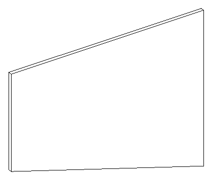

Creating a Wall with a Sloped Profile
Here is a question from Winnie on the creation of walls with a sloped profile:
Question: I'm having problems trying to create walls that have constant sloped top edge. I tried using the NewWall method and passed in a CurveArray that contains the edges of the wall that would create a sloped top but the result was still a rectangular wall. Also, how would you alter an existing wall to have a top sloped edge?
Answer: Using NewWall and supplying a profile to define the slope is exactly the right approach. I implemented a minimal new command named CmdSlopedWall to do this. Here is the code for the Execute method to create a wall with a sloped upper edge:
Application app = commandData.Application; Autodesk.Revit.Creation.Application ac = app.Create; CurveArray profile = ac.NewCurveArray(); double length = 10; double heightStart = 5; double heightEnd = 8; XYZ p = ac.NewXYZ( 0.0, 0.0, 0.0 ); XYZ q = ac.NewXYZ( length, 0.0, 0.0 ); profile.Append( ac.NewLineBound( p, q ) ); p.X = q.X; q.Z = heightEnd; profile.Append( ac.NewLineBound( p, q ) ); p.Z = q.Z; q.X = 0.0; q.Z = heightStart; profile.Append( ac.NewLineBound( p, q ) ); p.X = q.X; p.Z = q.Z; q.Z = 0.0; profile.Append( ac.NewLineBound( p, q ) ); Document doc = app.ActiveDocument; Wall wall = doc.Create.NewWall( profile, false ); return CmdResult.Succeeded;
This is what the resulting wall looks like:

Regarding your second query on the modification of an existing wall: applying a profile to an existing wall which has none to start with is currently not supported by the API. Such a method would be similar to the Truss SetProfile method, but walls do not currently support this.
Here is version 1.0.0.22 (file no longer available) of the complete Visual Studio solution with this new command implementation.